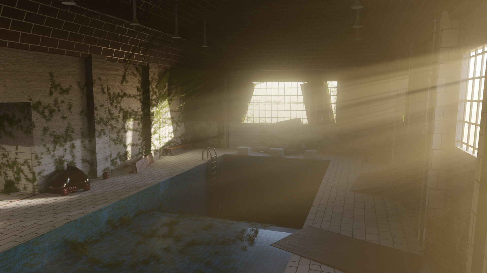

Game Design
In this section I have some examples of some small games that I have worked on.
Escape Puzzle Mansion
Escape puzzle mansion is an exploration puzzle game that i helped create. The main goals for this game was to create a mansion that would have several rooms and puzzles that the player needs to go through and explore in order to scape. My direct contributions for this project included the creation and planning of several rooms and puzzles. I created several puzzle room as well as other rooms that where used in order to provide hints for the player while also providing more places to explore. I contributed in creating the overall aesthetic that my teammates and I used for all the rooms of the mansion. Lastly I helped in the sound mixing and design for most of the game.


Ikura
Ikura goes Home is a puzzle game where a small ball needs to solve some platforming puzzles in order to save its siblings. I worked alongside a team on this project. My contributions include the design of some gameplay elements, the design of several puzzles, and the creation of the 3D environment inside Unity. Lastly I hand-made the textures so they would fit with the cartoon-like aesthetic of the game.